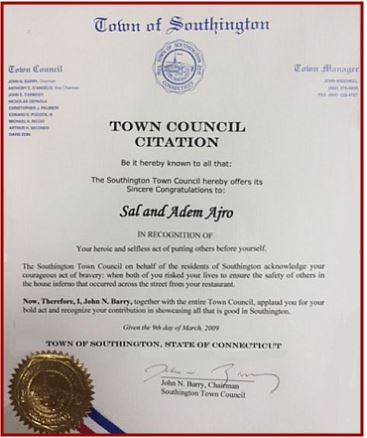
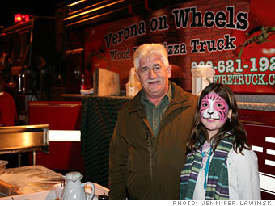

The Town Council presented two residents with a citation Monday night, honoring their heroic behavior during the recent severe fire on MeridenWaterbury Turnpike. Sal Ajro and his son, Adem Ajro, rushed into the burning house during the blaze to search for survivors. Fire Chief Harold “Buddy” Clark introduced the two honorees and outlined the events of the February 28 fire. The firefighters responded quickly, but Clark said the first two floors of the home were engulfed by flames by the time they arrived. The fire started near the electric stove, but firefighters have not yet determined the exact reason for it. Though the fire has displaced numerous residents who lived in the three-story house, there were no casualties. The Ajros were searching for survivors, but nobody was home during the blaze. “What Sal and his son did was brave and heroic. They showed their compassion for their fellow man. I’m proud to have them as citizens of Southington.” Sal Ajro is the owner of Verona Pizza on Meriden-Waterbury Turnpike. The house was located almost exactly across the street from the restaurant. “I’m proud to be in this town,” Sal Airo said. “When you spend so much time in one town, you become part of the town.” Sal Airo also told the crowd he was proud of his son for not hesitating to help out when the situation arose. The citation named both of them in its message. “They risked their own safety for the safety of others,” said Council Chairman John Barry. “We’re very proud of both of your efforts.” The Community Services Department is currently working to assist the families displaced by the fire. Anyone who wishes to help can contact the department at 628- 3761.
~ Harold Clark, Southington Fire Chief

A Fiery Business Verona Pizza on Wheels (Pizza Fire Truck) served up delicious pizza at the Barter Business Unlimited holiday trade show this week. Verona Pizza may be feeling the pain of recession, but with the pizzeria's Verona on Wheels mobile pizza oven -- built inside a retired fire truck -- owner Sal Ajro has been able to weather the downturn. The barter show helped him network, Ajro said, as hungry traders took brochures along with slices of hot pizza from the fire truck oven. He even booked two birthday parties. What did he get in return? A scooter for his teenage daughter, Amber.

IDEA CATCHES FIRE
Southington Pizzeria Gets A Mobile Edge In A Firetruck November 20, 2009 By TERESA M. PELHAM, Special to The Courant
SOUTHINGTON - - A Shelton man arrived home from work one evening this summer to see a firetruck with lights flashing and sirens blaring in his driveway, along with dozens of people standing in front of his house. After a few frantic moments, he realized that his house was not on fire: His wife had decided to throw him a surprise birthday party, with Verona on Wheels as both the caterer and the entertainment.
In October 2008, with business a little slow because of the sluggish economy, Sal Ajro, owner of Verona Pizzeria in Waterbury, was trying to come up with an idea to bring in revenue, especially during the summer when his regular customers go out of town. As he talked with a friend over a glass of wine outside his pizza shop on the Meriden- Waterbury Turnpike, a firetruck drove by on its way to a call. "I told my friend, 'I got it!'" said Ajro, a native of Albania. "My landlord shopped around the next day, found one on eBay and within two days I had a firetruck. When I know something is going to work I don't waste time." Ajro spent the next eight months gutting the inside of the 1970 firetruck, which had been in service in Cape Elizabeth, Maine, and then installed a refrigeration system and wood-fired brick oven. He catered his first "Verona on Wheels" party in June at Pratt & Whitney in East Hartford - an employee picnic for 150 people. Since then, he's made thin-crust pizzas - which take just 2½ minutes to cook in the truck's 700-degree oven - for two to three parties a week all summer and fall. About a dozen parties are already booked for 2010. Prices start at $1,250 for a party of 50 guests, and include as much salad, garlic knots, pizza and Italian ice people can eat. One party guest claimed to have eaten 112 slices at a graduation party this summer. Kids and adults are encouraged to sit inside the truck and play with the lights and sirens. At an auction in June, Ajro bought a second firetruck that had been used on the campus of Connecticut Valley Hospital in Middletown. He retrofitted the second truck in three months. Each truck cost about $60,000 to purchase and renovate. He has a deposit on a third truck - this time from Bristol - which should be up and running by springtime. Because the colder weather doesn't lend itself to outdoor pizza parties, Ajro is hoping to take the trucks to Florida for the winter. Ajro grew up on a farm in Albania, moved to Italy at 17, and came to the United States at 19. He worked in factories, learned to be a toolmaker, went to night school for refrigeration repair and for 25 years worked as a self-employed refrigeration repairman. In 2001 he transformed a jewelry store into Verona's Pizzeria - learning how to build a brick oven along the way. "In this country - in the United States - you can make it to the top," he said. "Nobody can stop you."